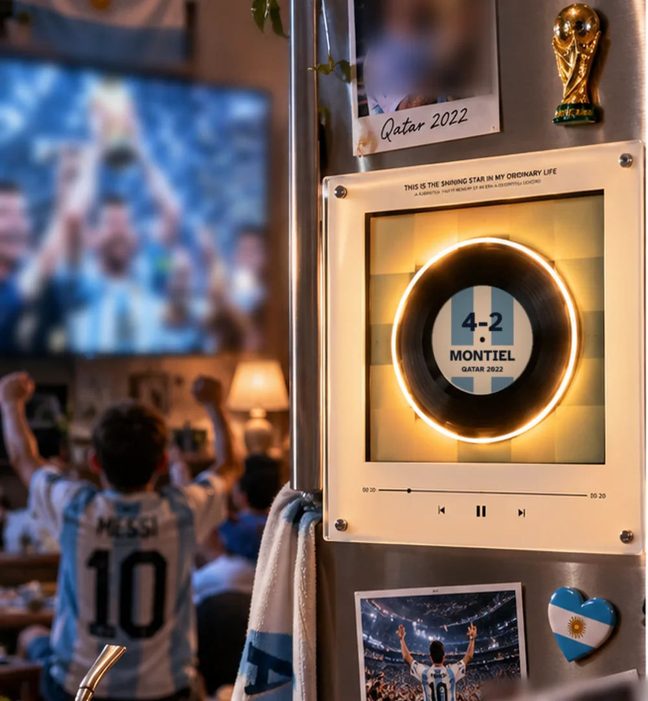

Front pages: El Gráfico n° 3065, 1978 – public domain · El Gráfico n° 3482, 1986 – public domain · La Nación, 19/12/2022 – © La Nación / Getty Images
Argentina · 9 recordsIn stock
Argentina's 9 discs
Nine goals, nine stories. Tap a disc to read how it happened, in the words of that day's papers and commentators.
🎧 Tap a disc and hear the goalIn stock: ships right away. Free shipping worldwide.

Flip through the 9 discs
🎧 Tap a disc. Hear the goal. Feel it all over again.


Disc 1 of 9
Maradona 51'
La mano de Dios
The memoryA fist higher than the midday sky. The ball went in, and a whole country went in with it.
Mexico City, a quarter-final against England, four years after the Falklands War. For Argentinians this is no ordinary game.
In the 51st minute a miscued clearance by Steve Hodge loops towards goalkeeper Peter Shilton. Maradona, eight inches shorter, jumps with him and flicks the ball in with his left fist. Tunisian referee Ali Bin Nasser gives the goal: 1-0.
England protest, but the goal stands. Four minutes later Maradona scores the goal of the century too.
Behind the goal After the game he said the goal came "a little with the head of Maradona and a little with the hand of God". The name stuck. — Diego Armando Maradona, conferencia de prensa, 22/06/1986


Disc 2 of 9
Burruchaga 84'
Mundial 1986
The memoryForty metres on his own, with thirty million hearts running behind him.
In the final Argentina go 2-0 up through José Luis Brown and Jorge Valdano. West Germany fight back: Rummenigge and Völler level it within six minutes.
In the 84th minute Maradona, tightly marked all game, finds room for one pass. It's enough: Jorge Burruchaga races clear with a German defender chasing him and beats Harald Schumacher as he comes out. 3-2.
Six minutes later Argentina are world champions for the second time.
Behind the goal Years later he described his 40-metre run at Schumacher: "Nunca pensé otra cosa que en que fuera gol" – I thought of nothing but scoring. — Jorge Burruchaga, Análisis Digital, 29/06/2021
«El grito de un país. ¡Campeones del mundo!»


Disc 3 of 9
Messi 28'
Getafe 2007
The memoryTwenty-one years later, the same run: as if football had rewound the tape for those born too late.
Messi is 19. He picks the ball up on the right, still in his own half, and sets off.
He beats every player who comes at him, one after another, enters the box, rounds the goalkeeper too and scores from a tight angle as a defender slides in too late.
In the stadium and in front of the TV everyone thought the same thing: it was Maradona's goal against England, almost identical, 21 years later.
Behind the goal After the game he explained it in six words: "Vi hueco y tiré para adelante" – I saw a gap and went for it. 55 metres, 12 seconds, 6 players beaten. — Lionel Messi, Mundo Deportivo, 19/04/2007
«El pie de Dios»
«Y ahora lo llaman «Messidona»»
«Encara Messi!»


Disc 4 of 9
Montiel 4-2
Champions 2022
The memoryThirty-six years of waiting, packed into twelve yards. One kick, and a whole country breathed again.
One of the greatest finals ever. Argentina lead 2-0, Mbappé levels with two goals in two minutes. In extra time Messi makes it 3-2 and Mbappé completes his hat-trick: 3-3.
In the shoot-out Emiliano Martínez saves from Coman and Tchouaméni shoots wide. Argentina's fourth penalty falls to Gonzalo Montiel: score and it's over.
He had planned to hit it hard down the middle. He sees Lloris move early and switches sides at the last moment. Goal: Argentina are world champions.
Behind the goal In extra time his handball had given Mbappé the penalty for 3-3. Before the shoot-out Scaloni asked him twice if he was up for it: "le respondí que estaba seguro" – I told him I was sure. Then he scored the winner. — Gonzalo Montiel, AFA Estudio, 2023
«Gloria eterna»
«¡Somos campeones del mundo!»
«Le cambié de palo.»

Disc 5 of 9
Messi 61'
Copa América 2007
The memoryEveryone expected the shot. He drew a rainbow instead, and the ball floated down like a feather that knew where it was going.
Messi has just turned 20. Argentina lead Mexico 1-0, but the game is still open.
In the 61st minute Messi receives in the box on the right, at a tight angle. Everyone expects a shot or a cross: instead he lifts a soft chip over the goalkeeper and under the bar. 2-0.
Riquelme then wraps it up from the spot: 3-0, Argentina into the final.
Behind the goal Years later Chilean referee Carlos Chandía revealed that late on Messi, already booked, handled the ball. Instead of a second yellow he told him: "Esta jugada es amarilla, pero te va a costar la remera" – that's a yellow, but it'll cost you your shirt. Messi handed it over in the dressing room. — Carlos Chandía, El VBAR de Caracol, 2024
«Messico'86»
«Belleza americana»


Disc 6 of 9
Maradona 55'
El gol del siglo
The memorySixty metres, England left behind, and a commentator in tears because words were no longer enough.
Four minutes after the Hand of God. Héctor Enrique gives Maradona the ball in his own half.
Maradona turns and goes. Past Beardsley and Reid, then Butcher and Fenwick, round goalkeeper Shilton and into the net. About sixty metres in just over ten seconds.
On the radio Víctor Hugo Morales screamed: "¡Barrilete cósmico! ¿De qué planeta viniste?".
Behind the goal It all began at Wembley in 1980: Maradona beat half the England defence, but his shot didn't go in. On the phone his brother Hugo told him: "Pelu, tendrías que haber enganchado" – you should have taken the keeper on too. Six years later he did. — Hugo Maradona, después de Wembley 1980 (El Gráfico)
«No llores por mí Inglaterra»
«¡Barrilete cósmico! ¿De qué planeta viniste?»
«El Negro Enrique me la da lejos del arco.»


Disc 7 of 9
Kempes 38'
Mundial 1978
The memoryThe Monumental under a storm of ticker tape: it looked like paper snow, in June, falling just for him.
The first World Cup final Argentina played at home. The Monumental is packed and the pitch covered in ticker tape.
In the 38th minute Mario Kempes bursts into the box between two Dutch defenders and beats goalkeeper Jan Jongbloed: 1-0. The Netherlands equalise through Nanninga eight minutes from time.
In extra time Kempes scores again, then Bertoni: 3-1. Argentina's first World Cup.
Behind the goal In the first round he wasn't scoring and wore a moustache. Menotti told him: "…¿por qué no se afeita de una vez en Rosario y se acuerda de hacer goles?" – why not shave and remember how to score? Kempes shaved, then scored 6 goals, two in the final. — César Luis Menotti, según Mario Kempes (EFE, 2018)
«Kempes, el jugador del Mundial»


Disc 8 of 9
Di María 36'
Mundial 2022
The memoryHe ran and cried at the same time. Some joys are too big for one person.
Argentina are already 1-0 up through Messi's penalty. In the 36th minute a lightning counter-attack: Messi, Julián Álvarez, Mac Allister.
Mac Allister finds Ángel Di María racing in from the left, and he finishes first time into the far corner. 2-0.
Di María bursts into tears in the middle of the pitch. He had already scored in the 2008 Olympic final, the 2021 Copa América final at the Maracanã and the 2022 Finalissima at Wembley.
Behind the goal Before the final he had texted his wife: "Voy a hacer un gol porque está escrito, como en el Maracaná y Wembley" – I'll score because it's written, like at the Maracanã and Wembley. — Ángel Di María, El Economista, 20/12/2022
«In the Hand of God»
Disc 9 of 9
Messi 84'
Brazil 2012
The memoryAgainst Brazil, the old rival: a curler into the top corner, like a signature at the end of a love letter.
A friendly that felt like a final: seven goals and the lead changing hands between Argentina and Brazil.
At 3-3, with a few minutes left, Messi picks the ball up near halfway on the right. He cuts diagonally towards goal and from the edge of the box curls it into the top corner. 4-3.
His hat-trick against Brazil: three goals in one game against the old rivals.
Behind the goal At the press conference coach Alejandro Sabella summed it up, talking about Messi: "Gracias a Dios es argentino" – thank God he's Argentine. — Alejandro Sabella, conferencia de prensa (Diario de Cuyo, 10/06/2012)
«Con Messi todo se puede»

All 9 discs, in the light-up frame
In stock: ships right away. Free shipping worldwide.
Order the Albiceleste edition€79